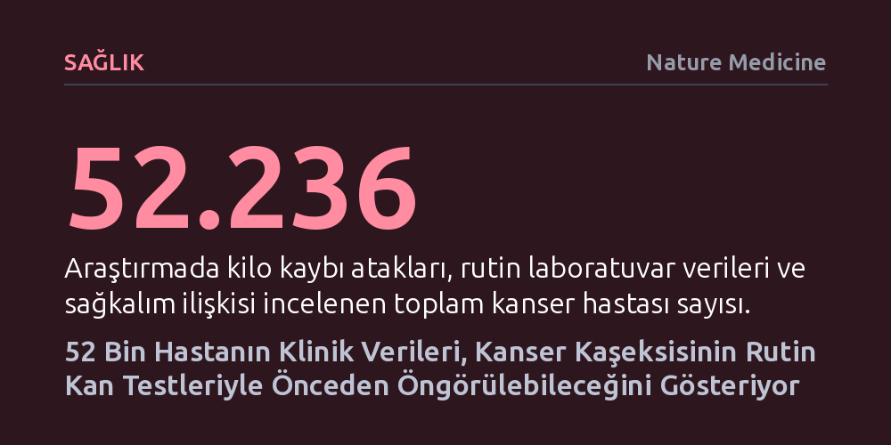

SAGLIK · Nature Medicine · 2026-10-14
52 binden fazla kanser hastasını inceleyen araştırma, kaşeksi ataklarının tümör ilerlemesiyle örtüştüğünü ve rutin kan testlerinde belirgin bir serolojik iz bıraktığını saptadı. TP53 mutasyonlarıyla da ilişkili bu ölümcül doku kaybı tablosunun, eğitilen istatistiksel modeller sayesinde önceden tahmin edilebileceği ortaya kondu.
Kanser hastalarındaki ağır doku kaybının kaçınılmaz bir son evre yazgısı olmadığını, rutin klinik testler ve genetik verilerle henüz ortaya çıkmadan öngörülebileceğini kanıtlıyor.

Kanser tedavisinde genellikle tümörün boyutuna ve yayılımına odaklanılsa da hastaların yaşam kalitesini ve hayatta kalma şansını doğrudan tehdit eden en sinsi süreçlerden biri metabolik tükeniştir. Tıpta kaşeksi olarak adlandırılan bu durum, yalnızca iştahsızlık veya aç kalmayla izah edilemez. Vücudun kendi kas ve yağ dokusunu hızla eritmesiyle seyreden bu sendrom, hastanın genel direncini kırarak uygulanan kemoterapi ve diğer ağır tedavileri tolere edemez hale gelmesine yol açar.
Nature Medicine dergisinde yayımlanan yeni çalışma, sağlık sistemi ölçeğindeki verileri kullanarak bu yıkıcı sendromun seyrini ayrıntılı biçimde ortaya koyuyor. Tam 52.236 kanser hastasının takip verilerine dayanan analizler, kaşeksinin rastgele zamanlarda ortaya çıkmadığını; doğrudan tümörün ilerleme kaydettiği evrelerde yoğunlaştığını ve sağkalım oranlarını ciddi biçimde düşürdüğünü gösteriyor.
Araştırmanın en dikkat çekici yönü, kaşeksinin anlaşılması için karmaşık ya da yüksek maliyetli deneysel tetkiklere muhtaç olunmadığını göstermesi oldu. Onkoloji kliniklerinde hastalardan rutin olarak alınan standart kan testleri incelendiğinde, kaşektik kilo kaybı yaşayan bireylerde tutarlı bir serolojik izin bulunduğu anlaşıldı. Bu durum, doku yıkımının vücutta genel biyokimyasal dengeleri belirli bir örüntü dahilinde değiştirdiğini ve olağan laboratuvar sonuçlarının satır aralarından okunabileceğini kanıtlıyor.
Çalışma ayrıca metabolik çöküşün doğrudan tümörün kendi genetik özellikleriyle de bağlantılı olduğunu açığa çıkardı. Özellikle hücrenin kontrolsüz çoğalmasını engelleyen 'gardiyan' gen olarak bilinen TP53 mutasyonunu taşıyan tümörlerde, kaşeksi gelişme riskinin belirgin şekilde arttığı tespit edildi. Bu bulgu, kaşeksinin yalnızca bedenin hastalığa verdiği pasif bir tepki olmadığını, tümörün genetik kurgusu tarafından da aktif olarak tetiklendiğini belgeliyor.
Bugüne kadar kaşeksi teşhisi ekseriyetle hasta belirgin bir kilo ve kas kaybı yaşadıktan sonra konulabiliyordu. Ancak bu aşamada metabolik yıkım geri döndürülmesi son derece güç bir eşiği aşmış oluyor, standart beslenme takviyeleri dahi istenen faydayı sağlayamıyordu. Araştırmacılar, elde edilen geniş çaplı verileri istatistiksel modellere dönüştürerek hastaların henüz kilo kaybı yaşamadan önceki kaşeksi riskini tahmin etmeyi başardı.
Rutin klinik göstergeler ve genetik risk etkenleriyle beslenen bu modeller, hekimlere erken uyarı imkânı tanıyor. Böylece hastanın genel metabolik çöküşe girmesi beklenmeden, hedefe yönelik farmakolojik ve beslenme müdahaleleri devreye sokulabilecek ve hem yaşam süresi hem de tedavi başarısı anlamlı ölçüde korunabilecek.